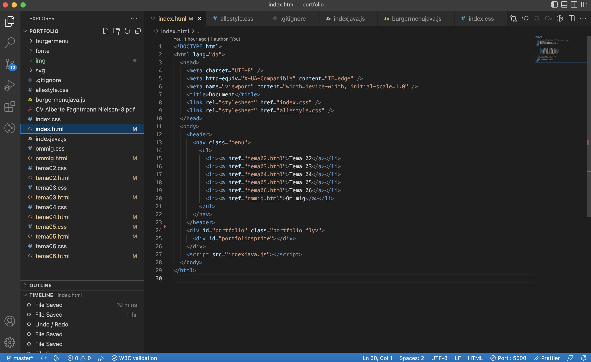

Tema 06 Eksamen
Designproces
På denne side ses min designproces over mit portfolio site. For at kunne udarbejde netop dette website, har jeg brugt mine færdigheder gennem det 1. semester.
Moodboard

Styletile

Prototype

Forside prototype

På mit portfolio var det vigtigt for mig at skabe noget fangende på forsiden. Dette har jeg gjort ved at designe en typografi i adobe Illustrator og animere det i javascript
Layoutdiagram

Forside kode
Gastaltlove
På mit portfolio har jeg gjort brug af gastaltlovene nærhed, loven om lighed, kontinuitet og lukkethed. Det har jeg gjort ved at placere elementer, som er relateret til hinanden, tæt på hinanden.
Farver
På mit portfolio har det været vigtigt for mig at bruge farver som er fangende til at få brugerens opmærksomhed.
Grid
Jeg har brugt grid på mit portfolio, da det skaber visuel klarhed, dette gør det nemmere at navigere på hjemmesiden. Dette er en god metode til at skabe asymmetri som kan tilføre "spænding" til et stramt grid layout.